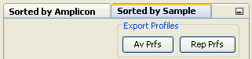
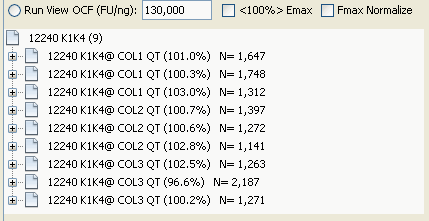

The sorting panel provides two windows that allow profiles that to be organized by either amplicon or sample:

When an experiment or calibration database window is selected, these two windows become active. Selecting either of these windows produces a list of all the amplicon or samples, contained within the database. In this example, this produces a list of the four amplicons contained within the demonstration experiment database:
Note that the average Emax is presented in the label, along with the standard deviation generated by all of the profiles produced by the amplicon. Selecting an amplicon generates a list of the nine profiles contained within the experiment database that were produced using this amplicon :
Experiment Window

Selection of any of these profiles will trigger the profile editor window to appear. Conversely, if a sample is selected in the sample sorting window, all of the profiles generated by that sample will be displayed within the explorer database window, and again selection of any of these profiles will trigger the profile editor window to appear.
To return to viewing the runs, click on the run view button:

Calibration profiles contained within a calibration database can also be viewed in this fashion.
Note also that both of the sorting windows can "slide" into the right hand border by clicking on the button located on the right top of the panel:

When slide in the windows can then be opened by clicking on, or hovering the mouse over the corresponding window button. The windows can also be locked back into place by clicking on the black circle located at the top right of the window.